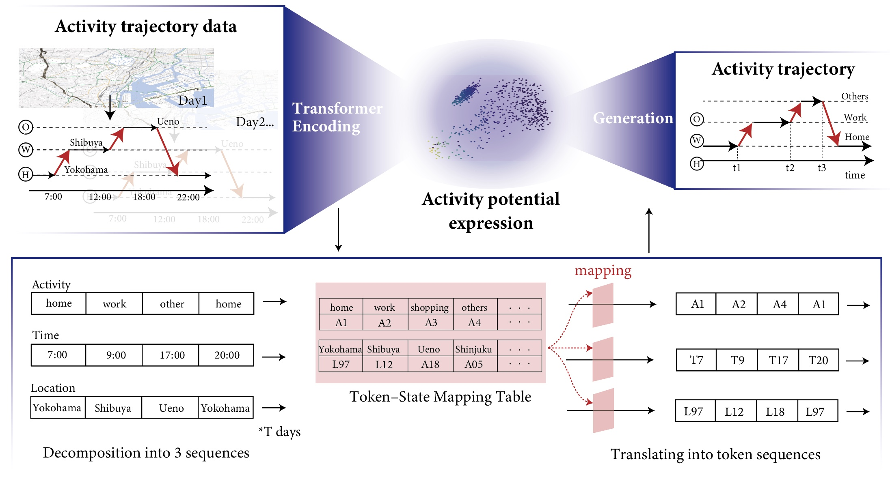
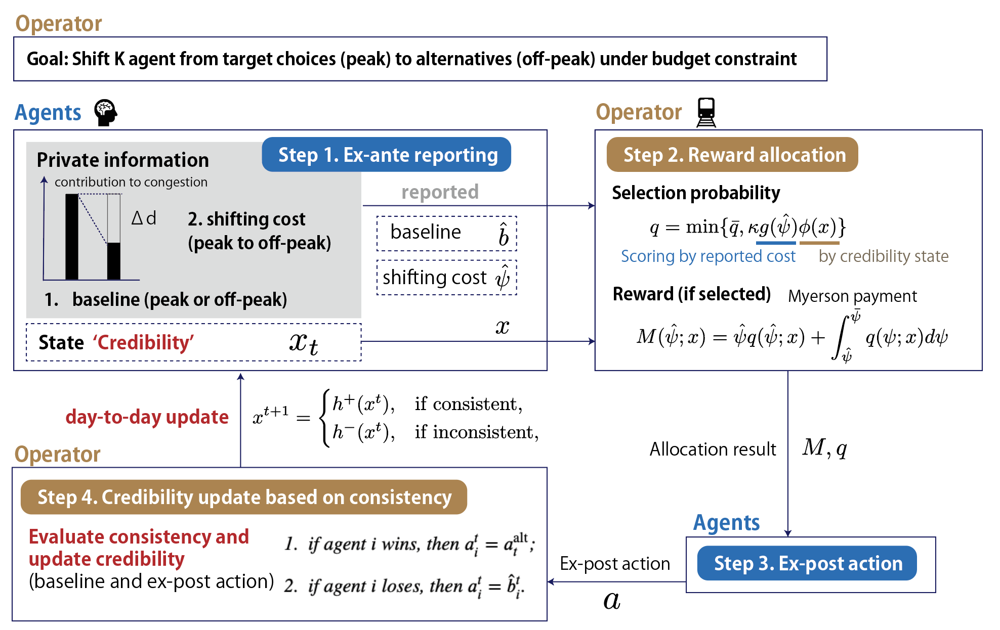

Research Interests
Observation and Modeling of Three-Dimensional Pedestrian Spaces: Leveraging Sensor-Based Observation
Railway stations and their surrounding areas contain complex three-dimensional, semi-indoor spaces in which multiple levels and passageways are interconnected. In these environments, detailed observation and prediction of pedestrian behavior are essential not only for preventing crowd accidents, but also for designing spaces that can accommodate robots and emerging forms of mobility in the future...
Selected publications: Takahiro Matsunaga and Eiji Hato. “Mean field dynamics for pedestrian interaction in quantized observation-based 3D route choice modeling.” Transportation Research Part C: Emerging Technologies, 186, 105608, 2026.


Prediction and Generation of Activity Demand: Applying Language Generation Models to Activity Modeling
From the perspective of activity-based models (ABMs), which view travel demand as being derived from people's activities, predicting daily activity trajectories is one of the most fundamental approaches to understanding travel demand...

Mechanism Design for Participatory Travel Demand Management
One of the theoretical origins of travel demand management can be traced back to Pigou's proposal to tax congestion externalities. Since then, a wide range of approaches, including marginal-cost pricing and capacity constraints, have been proposed...
